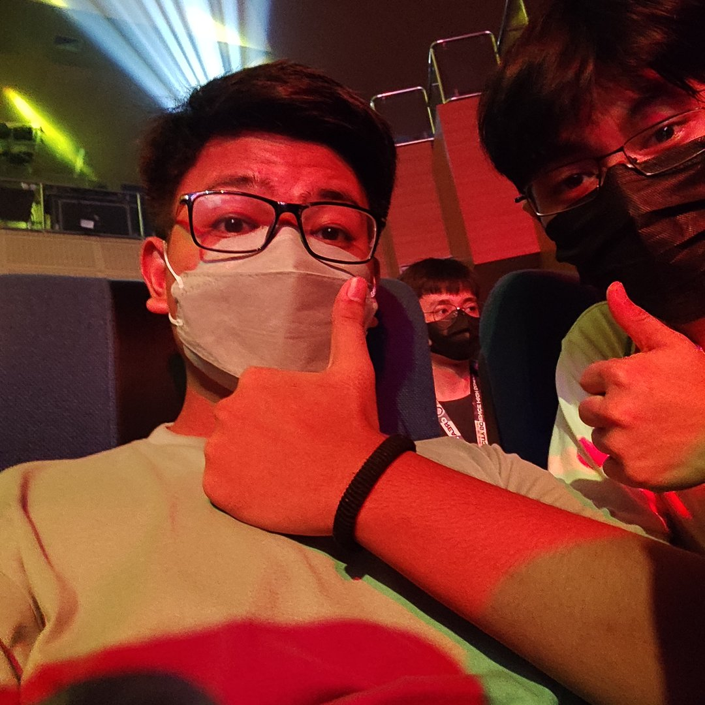

From Small Town to Big Dreams
Childhood Story
I grew up in Pangasinan, where I was raised by my lolo, lola, and tita while my parents were working in Manila. I lived with them for several years, and they became the people who guided me through my early childhood. Even though my parents were far away, my grandparents and aunt made sure I never felt alone. Life in Pangasinan was simple, but it was filled with routines that made me feel secure. I spent most of my days playing around our neighborhood and learning the things every kid naturally picks up. My first language was Ilocano, so that was the language I used daily with the people around me. Because of that, I was not used to speaking Tagalog when I was young. Everything changed when my parents brought me to Manila in grade 2. Moving to a new place at that age was exciting, but it was also difficult. One of the biggest challenges I faced was adjusting to Tagalog, which I was not comfortable with at that time. I had to learn new words and expressions to communicate better with my classmates. It took time to get used to hearing and speaking Tagalog every day. I also had to adjust to a different environment because Manila felt very different from Pangasinan. I studied at Sta. Rosa Catholic School in Pasig, where my mother worked as a teacher. Studying in the same school where my mom taught made my transition a little easier. Back in Pangasinan, I loved playing basketball with my friends almost every day. In Manila, I didn’t have many friends yet, so I often played basketball alone at home. As time passed, I eventually made new friends in grade 3 and grade 4. Around that same time, I also became an altar server at our church. I continued serving faithfully until grade 8, when the COVID-19 pandemic suddenly stopped all activities.


Teenage Years
My teenage years were not very different from my childhood because I still spent most of my time studying and trying to get better grades. I continued making friends at school and spending time with them whenever I could. We would play together, laugh, and share small moments that made school life enjoyable. But everything changed when the COVID-19 pandemic hit. I could no longer go to my friends’ houses or play outside as I used to. During that time, I mostly stayed at home and played on my computer to pass the time. Even though I couldn’t meet my friends in person, we stayed connected through the internet. We would chat, call, and play online games together almost every day until 1 a.m. We also helped each other with assignments and schoolwork, which made studying easier. During the pandemic, I sometimes felt very low and struggled with my mental health. Whenever I felt that way, my friends were always there to support me. They would cheer me up, listen to my problems, and make sure I did not feel completely alone. Even though the situation was difficult, staying in contact with my friends helped me get through it. When the pandemic finally ended, I had just reached grade 11. I started studying at Centro Escolar Integrated School in Makati, where I took STEM. At first, it felt strange to be far from home and to commute daily using the MRT or UV Express. Despite that, I found the experience fun and exciting. I met many new people and made new friends who shared the same interests. School life became busy with new challenges, but I enjoyed learning new things and growing academically. Overall, my teenage years taught me the importance of friendship, support, and adapting to change.



College Experience
When I started college, I felt nervous on the first day because I knew I would meet people who were really good at studying. I was scared that I might be left behind compared to my classmates. In the first semester, I worked hard and tried to do all my assignments ahead of time. I studied regularly and focused on understanding the lessons, which helped me keep up with my subjects. Everything felt manageable, and I was confident in my abilities during that time. But when the second semester began, I faced a major challenge that humbled me quickly. Analysis 1, which is calculus, became very difficult for me. I struggled a lot and almost failed the subject if it were not for the help of my friends. They guided me through problems, explained concepts, and encouraged me to keep going. Thanks to their support, I was able to pass and continue with my first year successfully. My first year of college was full of fun and exciting moments, with both ups and downs. I learned how to manage my time, balance studying with social life, and ask for help when I needed it. Now, I am in my second year and getting closer to graduating, which makes me feel proud and motivated. In the first semester of my second year, I struggled again in Analysis 1 during prelims, getting a 4.0, which is a failing grade. I realized I needed to focus more, so I decided to lock in and work even harder. By midterms, my grade improved to 3.0, showing that my effort was paying off. In the finals, I got a 2.25, which made my parents proud, and they gave me shoes and t-shirts to celebrate my achievement. Now, in the second semester, I am striving to survive and succeed in college while continuing to learn and improve. I have learned the importance of perseverance, hard work, and relying on friends for support. No matter how challenging it gets, I am determined not to stop until I graduate and achieve my goals.